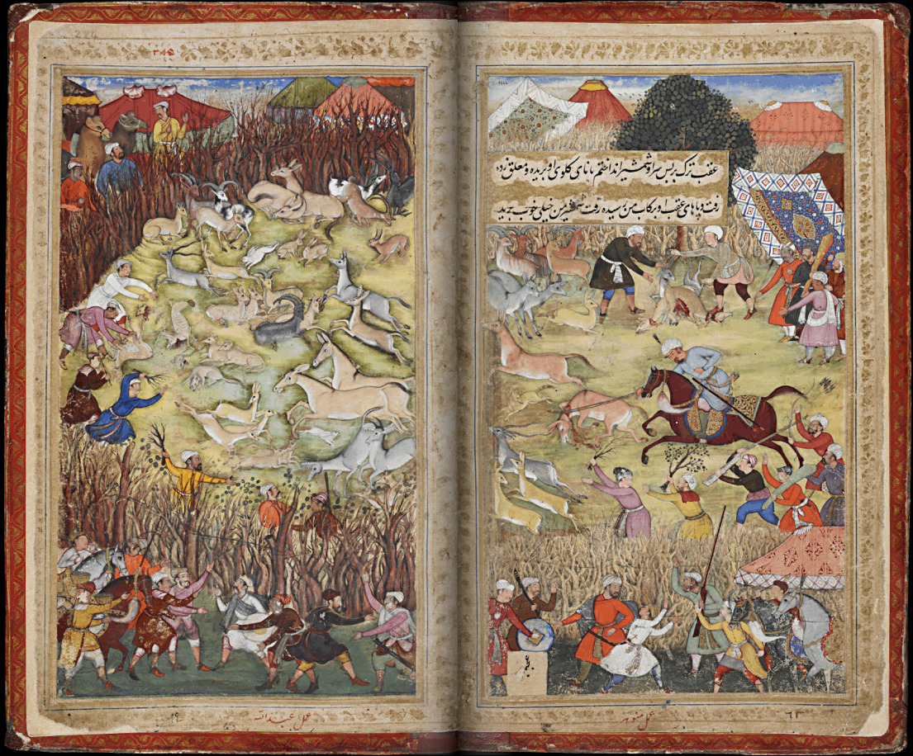

Babürname
Babür İmparatorluğu'nun kurucusu Babür Şah'ın (1529) Çağatay Türkçesi ile yazdığı ve kronolojik olarak yaptıklarını anlattığı Babürnâme Türk edebiyat tarihinin nesir türündeki başeserlerinden biri olarak kabul edilir. Kitabın bilinen tek nüshası Londra'da British Library de bulunmaktadır. Burada bu kitabın içindeki orijinal minyatürleri görebilirsiniz


